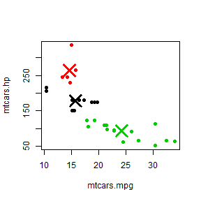

Cars K-mean clustering pitch
Sergey Nazarov
What is this application for
Application allows you to explore mtcars dataset, whether there are clusters of cars.
It uses k-means method of classification.
You should choose two variables and input a number of clusters (your intuition guess).
Application produces a two dimentional plot and shows centers of possible clusters.
Motor Trend Car Road Tests
Description
The data was extracted from the 1974 Motor Trend US magazine, and comprises fuel consumption and 10 aspects of automobile design and performance for 32 automobiles (1973 - 74 models).
Variables are:
- mpg Miles/(US) gallon
- cyl Number of cylinders
- disp Displacement (cu.in.)
- hp Gross horsepower
- drat Rear axle ratio
- wt Weight (1000 lbs)
- qsec 1/4 mile time
- vs V/S
- am Transmission (0 = automatic, 1 = manual)
- gear Number of forward gears
- carb Number of carburetors
After you choose number of clusters and two variables it produces a plot:
kmeansObj <- kmeans(data.frame(mtcars$mpg, mtcars$hp), centers = 3)
plot(data, col = kmeansObj$cluster, pch = 19)
points(kmeansObj$centers, col = 1:3, pch = 4, cex = 3, lwd = 3)
